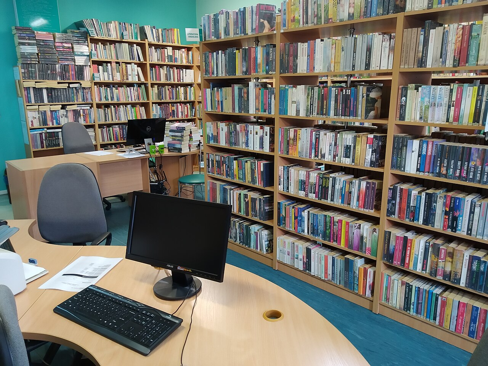
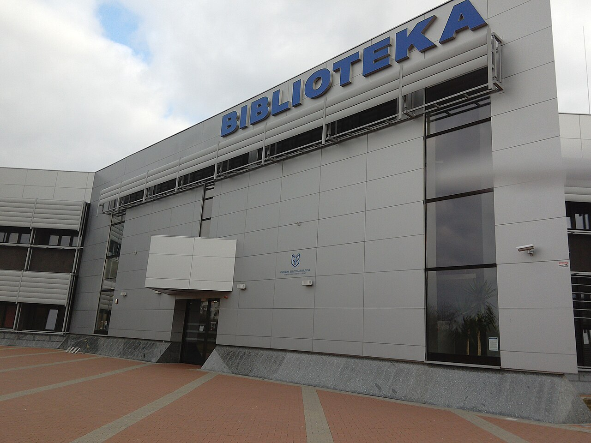
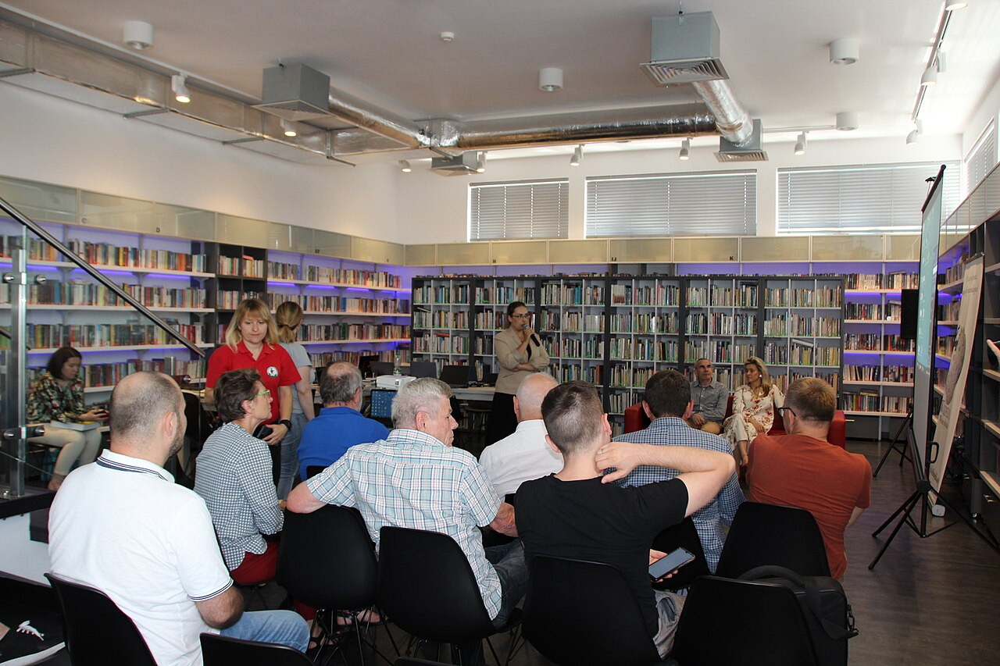
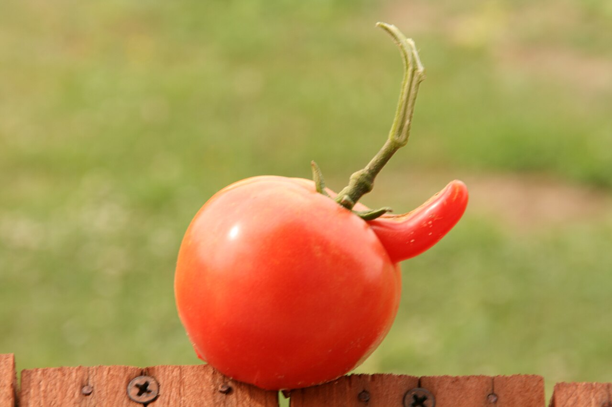
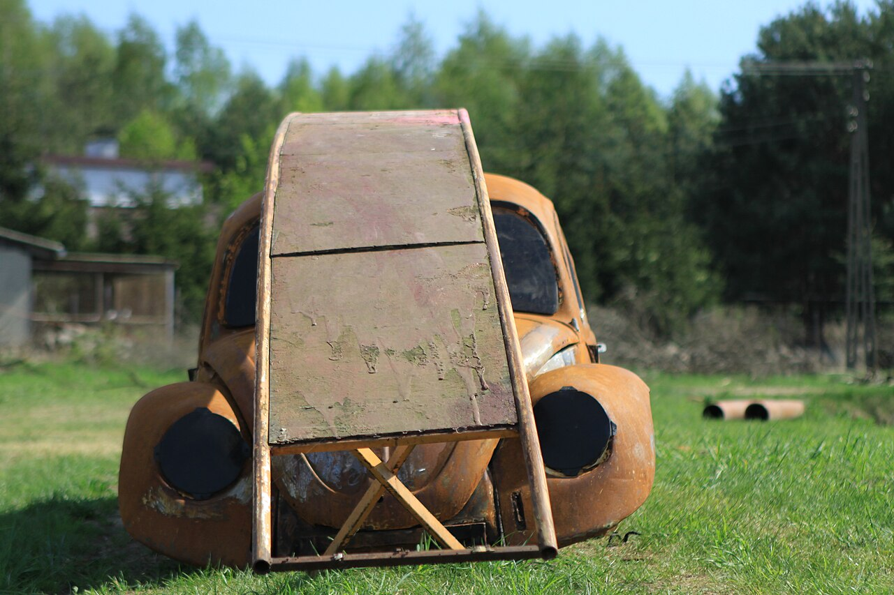

Zdjęcia na stronie to zdjęcia własne redakcji oraz zdjęcia z Wikimedia Commons na wolnych licencjach. Poniżej autorzy i licencje.
Zdjęcia z Wikimedia Commons (192)
 02016 1184 Straßenbau in Polen.JPGSilar · CC BY-SA 3.0
02016 1184 Straßenbau in Polen.JPGSilar · CC BY-SA 3.0 2014 Kłodzko, ul. Nadrzeczna 03.JPGJacek Halicki · CC BY-SA 4.0
2014 Kłodzko, ul. Nadrzeczna 03.JPGJacek Halicki · CC BY-SA 4.0 2019 Warszawa Borowa Góra.jpgCybularny · CC0
2019 Warszawa Borowa Góra.jpgCybularny · CC0 20200619 153148 June 2020 in Warsaw.jpgRakoon · CC0
20200619 153148 June 2020 in Warsaw.jpgRakoon · CC0 20200726 074820 Osiedle Rekreacyjne (Dojlidy).jpgRakoon · CC0
20200726 074820 Osiedle Rekreacyjne (Dojlidy).jpgRakoon · CC0 20200726 075020 Osiedle Rekreacyjne (Dojlidy).jpgRakoon · CC0
20200726 075020 Osiedle Rekreacyjne (Dojlidy).jpgRakoon · CC0 20220428 192421 April 2022 in Białystok.jpgRakoon · CC0
20220428 192421 April 2022 in Białystok.jpgRakoon · CC0 20220830new-parafia-building pulaskiego august 2022 02.jpgRakoon · CC0
20220830new-parafia-building pulaskiego august 2022 02.jpgRakoon · CC0 2023-07 Hanuszów (07) DW 46.jpgRalf Lotys (Sicherlich) · CC BY 4.0
2023-07 Hanuszów (07) DW 46.jpgRalf Lotys (Sicherlich) · CC BY 4.0 2023-07 Hanuszów (09) DW 46.jpgRalf Lotys (Sicherlich) · CC BY 4.0
2023-07 Hanuszów (09) DW 46.jpgRalf Lotys (Sicherlich) · CC BY 4.0 2023-07 Hanuszów (10) DW 46.jpgRalf Lotys (Sicherlich) · CC BY 4.0
2023-07 Hanuszów (10) DW 46.jpgRalf Lotys (Sicherlich) · CC BY 4.0 20230717 174924 July 2023 in Białystok.jpgRakoon · CC0
20230717 174924 July 2023 in Białystok.jpgRakoon · CC0 20230725 134951 July 2023 in Masovian Voivodeship.jpgRakoon · CC0
20230725 134951 July 2023 in Masovian Voivodeship.jpgRakoon · CC0 2025 Józefów Wiejska, 1.jpgCybularny · CC0
2025 Józefów Wiejska, 1.jpgCybularny · CC0 2025 Warszawa las w Aleksandrowie, 5.jpgCybularny · CC0
2025 Warszawa las w Aleksandrowie, 5.jpgCybularny · CC0 2025-01-26 ER160 Koleje Mazowieckie, Ciechanów.jpgRAIL P ( RAIL.PHOTOGRAPHY ) · CC0
2025-01-26 ER160 Koleje Mazowieckie, Ciechanów.jpgRAIL P ( RAIL.PHOTOGRAPHY ) · CC0 2025-09-12, Stadler FLIRT trains of Koleje Mazowieckie at Warszawa Zachodnia.jpgPatrycja Rosa ( ptrcnull ) · CC BY 4.0
2025-09-12, Stadler FLIRT trains of Koleje Mazowieckie at Warszawa Zachodnia.jpgPatrycja Rosa ( ptrcnull ) · CC BY 4.0 2025.04.26. Villa Waleria in Milanowek Poland.JPGMariusz Kubik · CC BY 4.0
2025.04.26. Villa Waleria in Milanowek Poland.JPGMariusz Kubik · CC BY 4.0 6270 August 2019 in Bialystok.jpgRakoon · CC0
6270 August 2019 in Bialystok.jpgRakoon · CC0 7096 August 2018 in Masovian Voivodeship.jpgRakoon · CC0
7096 August 2018 in Masovian Voivodeship.jpgRakoon · CC0 Adamowizna - willa od strony stawu.jpgJuwa · CC BY-SA 4.0
Adamowizna - willa od strony stawu.jpgJuwa · CC BY-SA 4.0 Adamowizna, foto25, szkoła podstawowa im.dra M.Chełmońskiego.jpgAndrzej Błaszczak · CC BY-SA 4.0
Adamowizna, foto25, szkoła podstawowa im.dra M.Chełmońskiego.jpgAndrzej Błaszczak · CC BY-SA 4.0 ADAMÓW 01.jpgAndrzej Błaszczak · CC BY-SA 4.0
ADAMÓW 01.jpgAndrzej Błaszczak · CC BY-SA 4.0 ADAMÓW 05.jpgAndrzej Błaszczak · CC BY-SA 4.0
ADAMÓW 05.jpgAndrzej Błaszczak · CC BY-SA 4.0 ADAMÓW 06.jpgAndrzej Błaszczak · CC BY-SA 4.0
ADAMÓW 06.jpgAndrzej Błaszczak · CC BY-SA 4.0 Ambulance LUK TRANS à Sarzyna lors de la troisième étape du Tour de Pologne 2022 (3).jpgWyslijp16 · CC BY-SA 4.0
Ambulance LUK TRANS à Sarzyna lors de la troisième étape du Tour de Pologne 2022 (3).jpgWyslijp16 · CC BY-SA 4.0 AMBULANS FIAT DUCATO.jpgKarol Szadkowski (AMZ Kutno) · CC BY-SA 4.0
AMBULANS FIAT DUCATO.jpgKarol Szadkowski (AMZ Kutno) · CC BY-SA 4.0 AMBULANS FORD TRANSIT.jpgKarol Szadkowski (AMZ Kutno) · CC BY-SA 4.0
AMBULANS FORD TRANSIT.jpgKarol Szadkowski (AMZ Kutno) · CC BY-SA 4.0 AMBULANS VW T6.jpgKarol Szadkowski (AMZ Kutno) · CC BY-SA 4.0
AMBULANS VW T6.jpgKarol Szadkowski (AMZ Kutno) · CC BY-SA 4.0 Bagno Całowianie (1).jpgMOs810 · CC BY 4.0
Bagno Całowianie (1).jpgMOs810 · CC BY 4.0 BARANÓW 02.jpgAndrzej Błaszczak · CC BY-SA 4.0
BARANÓW 02.jpgAndrzej Błaszczak · CC BY-SA 4.0
Biblioteka Rakoniewice.jpgBiblioteka Publiczna · CC BY-SA 4.0 Budynek G2.jpgMałgorzata Bieżanowska · CC BY-SA 4.0
Budynek G2.jpgMałgorzata Bieżanowska · CC BY-SA 4.0
ChBP w Chełmie.jpgAlicja9 · CC BY 3.0 CHLEBNIA 01.jpgAndrzej Błaszczak · CC BY-SA 4.0
CHLEBNIA 01.jpgAndrzej Błaszczak · CC BY-SA 4.0 CHLEBNIA 06 Dw,or Wieniawskich.jpgAndrzej Błaszczak · CC BY-SA 4.0
CHLEBNIA 06 Dw,or Wieniawskich.jpgAndrzej Błaszczak · CC BY-SA 4.0 CHLEBNIA 10 stadion LKS Chlebnia.jpgAndrzej Błaszczak · CC BY-SA 4.0
CHLEBNIA 10 stadion LKS Chlebnia.jpgAndrzej Błaszczak · CC BY-SA 4.0 CHRZANÓW DUŻY 01.jpgAndrzej Błaszczak · CC BY-SA 4.0
CHRZANÓW DUŻY 01.jpgAndrzej Błaszczak · CC BY-SA 4.0 CHRZANÓW DUŻY 04.jpgAndrzej Błaszczak · CC BY-SA 4.0
CHRZANÓW DUŻY 04.jpgAndrzej Błaszczak · CC BY-SA 4.0 CHRZANÓW DUŻY 05.jpgAndrzej Błaszczak · CC BY-SA 4.0
CHRZANÓW DUŻY 05.jpgAndrzej Błaszczak · CC BY-SA 4.0 CHRZANÓW MAŁY 01.jpgAndrzej Błaszczak · CC BY-SA 4.0
CHRZANÓW MAŁY 01.jpgAndrzej Błaszczak · CC BY-SA 4.0 CHRZANÓW MAŁY 03.jpgAndrzej Błaszczak · CC BY-SA 4.0
CHRZANÓW MAŁY 03.jpgAndrzej Błaszczak · CC BY-SA 4.0 CHRZANÓW MAŁY 05.jpgAndrzej Błaszczak · CC BY-SA 4.0
CHRZANÓW MAŁY 05.jpgAndrzej Błaszczak · CC BY-SA 4.0 Construction of a freeway in Poland (9441021057).jpgJeroen Komen from Utrecht, Netherlands · CC BY-SA 2.0
Construction of a freeway in Poland (9441021057).jpgJeroen Komen from Utrecht, Netherlands · CC BY-SA 2.0 CZARNY LAS 01.jpgAndrzej Błaszczak · CC BY-SA 4.0
CZARNY LAS 01.jpgAndrzej Błaszczak · CC BY-SA 4.0 CZARNY LAS 03.jpgAndrzej Błaszczak · CC BY-SA 4.0
CZARNY LAS 03.jpgAndrzej Błaszczak · CC BY-SA 4.0 CZARNY LAS 05 przedszkole niepubliczne.jpgAndrzej Błaszczak · CC BY-SA 4.0
CZARNY LAS 05 przedszkole niepubliczne.jpgAndrzej Błaszczak · CC BY-SA 4.0 CZARNY LAS 07.jpgAndrzej Błaszczak · CC BY-SA 4.0
CZARNY LAS 07.jpgAndrzej Błaszczak · CC BY-SA 4.0 Czytelnia Biblioteki Wydziału Historii UW.jpgBiblioteka76 · CC BY-SA 4.0
Czytelnia Biblioteki Wydziału Historii UW.jpgBiblioteka76 · CC BY-SA 4.0 D-construction 2011 (b) ubt.JPGTomasz Sienicki [user: tsca , mail: tomasz.sienicki at gmail.com] · CC BY 3.0
D-construction 2011 (b) ubt.JPGTomasz Sienicki [user: tsca , mail: tomasz.sienicki at gmail.com] · CC BY 3.0 Dawna szkoła powszechna w Żabiej Woli.jpgGrażyna Adamczyk · CC BY-SA 4.0
Dawna szkoła powszechna w Żabiej Woli.jpgGrażyna Adamczyk · CC BY-SA 4.0 Dwór we wsi Radonie.jpgJuwa · CC BY-SA 4.0
Dwór we wsi Radonie.jpgJuwa · CC BY-SA 4.0 DĄBRÓWKA 01.jpgAndrzej Błaszczak · CC BY-SA 4.0
DĄBRÓWKA 01.jpgAndrzej Błaszczak · CC BY-SA 4.0 DĄBRÓWKA 02.jpgAndrzej Błaszczak · CC BY-SA 4.0
DĄBRÓWKA 02.jpgAndrzej Błaszczak · CC BY-SA 4.0 DĄBRÓWKA 03.jpgAndrzej Błaszczak · CC BY-SA 4.0
DĄBRÓWKA 03.jpgAndrzej Błaszczak · CC BY-SA 4.0
Edyton w Kadzidle 4.jpgAmudena Rutkowska · CC BY-SA 4.0 Elementary School No. 47 in Gdynia, Poland.jpgFunctioningMemberOfSociety · CC BY 4.0
Elementary School No. 47 in Gdynia, Poland.jpgFunctioningMemberOfSociety · CC BY 4.0 EN57 KM-1486 Koleje Mazowieckie.jpgJan Stradowski · CC BY 3.0
EN57 KM-1486 Koleje Mazowieckie.jpgJan Stradowski · CC BY 3.0 EN57.jpgNullPointerException · CC BY-SA 4.0
EN57.jpgNullPointerException · CC BY-SA 4.0 ER160, Ciechanów.jpgRAIL P ( RAIL.PHOTOGRAPHY ) · CC BY-SA 4.0
ER160, Ciechanów.jpgRAIL P ( RAIL.PHOTOGRAPHY ) · CC BY-SA 4.0 ER160-002.jpgWojciech Skibiński · CC BY 3.0
ER160-002.jpgWojciech Skibiński · CC BY 3.0 ER160-10.jpgMacpach1234 · CC BY-SA 4.0
ER160-10.jpgMacpach1234 · CC BY-SA 4.0 Galeria Instrumentów Folkowych wejście.jpgKarol Szejner · CC BY-SA 4.0
Galeria Instrumentów Folkowych wejście.jpgKarol Szejner · CC BY-SA 4.0 Gdańsk Targ Węglowy (radiowóz).JPGArtur Andrzej · CC BY-SA 3.0
Gdańsk Targ Węglowy (radiowóz).JPGArtur Andrzej · CC BY-SA 3.0 Gmina Grodzisk Mazowiecki, Poland - panoramio (4).jpgArek N. · CC BY-SA 3.0
Gmina Grodzisk Mazowiecki, Poland - panoramio (4).jpgArek N. · CC BY-SA 3.0
Gmina Grodzisk Mazowiecki, Poland - panoramio - Arek N. (16).jpgArek N. · CC BY-SA 3.0 GRODZISK MAZ. Kościół p.w. Przemienienia Pańskiego 01.jpgAndrzej Błaszczak · CC BY-SA 4.0
GRODZISK MAZ. Kościół p.w. Przemienienia Pańskiego 01.jpgAndrzej Błaszczak · CC BY-SA 4.0 GRODZISK MAZ. Kościół p.w. Przemienienia Pańskiego 03.jpgAndrzej Błaszczak · CC BY-SA 4.0
GRODZISK MAZ. Kościół p.w. Przemienienia Pańskiego 03.jpgAndrzej Błaszczak · CC BY-SA 4.0 GRODZISK MAZ. Kościół p.w. Przemienienia Pańskiego 05.jpgAndrzej Błaszczak · CC BY-SA 4.0
GRODZISK MAZ. Kościół p.w. Przemienienia Pańskiego 05.jpgAndrzej Błaszczak · CC BY-SA 4.0 GRODZISK MAZ. Urząd Miasta i Gminy 01.jpgAndrzej Błaszczak · CC BY-SA 4.0
GRODZISK MAZ. Urząd Miasta i Gminy 01.jpgAndrzej Błaszczak · CC BY-SA 4.0 GRODZISK MAZ. WKD Okrężna 01.jpgAndrzej Błaszczak · CC BY-SA 4.0
GRODZISK MAZ. WKD Okrężna 01.jpgAndrzej Błaszczak · CC BY-SA 4.0 GRODZISK MAZ. WKD Okrężna 03.jpgAndrzej Błaszczak · CC BY-SA 4.0
GRODZISK MAZ. WKD Okrężna 03.jpgAndrzej Błaszczak · CC BY-SA 4.0 Grodzisk Maz., zdj.104, plac Zygmunta Starego.jpgAndrzej Błaszczak · CC BY-SA 4.0
Grodzisk Maz., zdj.104, plac Zygmunta Starego.jpgAndrzej Błaszczak · CC BY-SA 4.0 Grodzisk Maz., zdj.105, plac Zygmunta Starego.jpgAndrzej Błaszczak · CC BY-SA 4.0
Grodzisk Maz., zdj.105, plac Zygmunta Starego.jpgAndrzej Błaszczak · CC BY-SA 4.0 Grodzisk Maz., zdj.107, plac Zygmunta Starego, w głębi po prawej plac Wolności.jpgAndrzej Błaszczak · CC BY-SA 4.0
Grodzisk Maz., zdj.107, plac Zygmunta Starego, w głębi po prawej plac Wolności.jpgAndrzej Błaszczak · CC BY-SA 4.0 Grodzisk Mazowiecki - Stawy Walczewskiego 2023.jpgKarol Szejner · CC BY-SA 4.0
Grodzisk Mazowiecki - Stawy Walczewskiego 2023.jpgKarol Szejner · CC BY-SA 4.0 Grodzisk Mazowiecki - WKD Jordanowice (1).jpgKarol Szejner · CC BY-SA 4.0
Grodzisk Mazowiecki - WKD Jordanowice (1).jpgKarol Szejner · CC BY-SA 4.0 Grodzisk Mazowiecki - WKD Piaskowa (1).jpgKarol Szejner · CC BY-SA 4.0
Grodzisk Mazowiecki - WKD Piaskowa (1).jpgKarol Szejner · CC BY-SA 4.0 Grodzisk WKD 2019 1.jpgSmiley.toerist · CC BY-SA 4.0
Grodzisk WKD 2019 1.jpgSmiley.toerist · CC BY-SA 4.0 IZDEBNO KOŚCIELNE 01.jpgAndrzej Błaszczak · CC BY-SA 4.0
IZDEBNO KOŚCIELNE 01.jpgAndrzej Błaszczak · CC BY-SA 4.0 IZDEBNO KOŚCIELNE 02.jpgAndrzej Błaszczak · CC BY-SA 4.0
IZDEBNO KOŚCIELNE 02.jpgAndrzej Błaszczak · CC BY-SA 4.0 IZDEBNO KOŚCIELNE 08.jpgAndrzej Błaszczak · CC BY-SA 4.0
IZDEBNO KOŚCIELNE 08.jpgAndrzej Błaszczak · CC BY-SA 4.0 IZDEBNO NOWE 01.jpgAndrzej Błaszczak · CC BY-SA 4.0
IZDEBNO NOWE 01.jpgAndrzej Błaszczak · CC BY-SA 4.0 IZDEBNO NOWE 02.jpgAndrzej Błaszczak · CC BY-SA 4.0
IZDEBNO NOWE 02.jpgAndrzej Błaszczak · CC BY-SA 4.0 IZDEBNO NOWE 05.jpgAndrzej Błaszczak · CC BY-SA 4.0
IZDEBNO NOWE 05.jpgAndrzej Błaszczak · CC BY-SA 4.0 JANINÓW 001.jpgAndrzej Błaszczak · CC BY-SA 4.0
JANINÓW 001.jpgAndrzej Błaszczak · CC BY-SA 4.0 JANINÓW 001A.jpgAndrzej Błaszczak · CC BY-SA 4.0
JANINÓW 001A.jpgAndrzej Błaszczak · CC BY-SA 4.0 JANINÓW 02.jpgAndrzej Błaszczak · CC BY-SA 4.0
JANINÓW 02.jpgAndrzej Błaszczak · CC BY-SA 4.0 Kady Gm Grodzisk Mazowiecki.jpgWanda Well · CC0
Kady Gm Grodzisk Mazowiecki.jpgWanda Well · CC0 KADY róg ul.Mazowieckiej i Środkowej.jpgAndrzej Błaszczak · CC BY-SA 4.0
KADY róg ul.Mazowieckiej i Środkowej.jpgAndrzej Błaszczak · CC BY-SA 4.0 KADY ul.Mazowiecka f.2.jpgAndrzej Błaszczak · CC BY-SA 4.0
KADY ul.Mazowiecka f.2.jpgAndrzej Błaszczak · CC BY-SA 4.0 Kapliczka przydrożna w Kłudnie Starym3.jpgWieKo · CC BY-SA 4.0
Kapliczka przydrożna w Kłudnie Starym3.jpgWieKo · CC BY-SA 4.0 KAŁĘCZYN 01.jpgAndrzej Błaszczak · CC BY-SA 4.0
KAŁĘCZYN 01.jpgAndrzej Błaszczak · CC BY-SA 4.0 KAŁĘCZYN 04.jpgAndrzej Błaszczak · CC BY-SA 4.0
KAŁĘCZYN 04.jpgAndrzej Błaszczak · CC BY-SA 4.0 KB.Zbiornik wodny w Spalonej.jpgPoconaco · CC BY 3.0
KB.Zbiornik wodny w Spalonej.jpgPoconaco · CC BY 3.0 KOZERKI 01.jpgAndrzej Błaszczak · CC BY-SA 4.0
KOZERKI 01.jpgAndrzej Błaszczak · CC BY-SA 4.0 KOZERKI 02.jpgAndrzej Błaszczak · CC BY-SA 4.0
KOZERKI 02.jpgAndrzej Błaszczak · CC BY-SA 4.0 KOZERKI 04.jpgAndrzej Błaszczak · CC BY-SA 4.0
KOZERKI 04.jpgAndrzej Błaszczak · CC BY-SA 4.0 KOZERKI 06.jpgAndrzej Błaszczak · CC BY-SA 4.0
KOZERKI 06.jpgAndrzej Błaszczak · CC BY-SA 4.0 KOZERY 01.jpgAndrzej Błaszczak · CC BY-SA 4.0
KOZERY 01.jpgAndrzej Błaszczak · CC BY-SA 4.0 KOZERY NOWE 01.jpgAndrzej Błaszczak · CC BY-SA 4.0
KOZERY NOWE 01.jpgAndrzej Błaszczak · CC BY-SA 4.0 KOZERY NOWE 02.jpgAndrzej Błaszczak · CC BY-SA 4.0
KOZERY NOWE 02.jpgAndrzej Błaszczak · CC BY-SA 4.0 KOZERY NOWE 03.jpgAndrzej Błaszczak · CC BY-SA 4.0
KOZERY NOWE 03.jpgAndrzej Błaszczak · CC BY-SA 4.0 KOZERY NOWE 04.jpgAndrzej Błaszczak · CC BY-SA 4.0
KOZERY NOWE 04.jpgAndrzej Błaszczak · CC BY-SA 4.0 Kościół parafialny Przemienienia Pańskiego w Żukowie (powiat grodziski)1.jpgWieKo · CC BY-SA 4.0
Kościół parafialny Przemienienia Pańskiego w Żukowie (powiat grodziski)1.jpgWieKo · CC BY-SA 4.0 Kościół parafialny Przemienienia Pańskiego w Żukowie (powiat grodziski)4.jpgWieKo · CC BY-SA 4.0
Kościół parafialny Przemienienia Pańskiego w Żukowie (powiat grodziski)4.jpgWieKo · CC BY-SA 4.0 KRAŚNICZA WOLA 01.jpgAndrzej Błaszczak · CC BY-SA 4.0
KRAŚNICZA WOLA 01.jpgAndrzej Błaszczak · CC BY-SA 4.0 KRAŚNICZA WOLA 02.jpgAndrzej Błaszczak · CC BY-SA 4.0
KRAŚNICZA WOLA 02.jpgAndrzej Błaszczak · CC BY-SA 4.0 KRAŚNICZA WOLA 03.jpgAndrzej Błaszczak · CC BY-SA 4.0
KRAŚNICZA WOLA 03.jpgAndrzej Błaszczak · CC BY-SA 4.0 KSIĄŻENICE rondo ul.Mazowieckiej f.1.jpgAndrzej Błaszczak · CC BY-SA 4.0
KSIĄŻENICE rondo ul.Mazowieckiej f.1.jpgAndrzej Błaszczak · CC BY-SA 4.0 KSIĄŻENICE szkoła podstawowa przy ul.Eustachego Marylskiego f.1.jpgAndrzej Błaszczak · CC BY-SA 4.0
KSIĄŻENICE szkoła podstawowa przy ul.Eustachego Marylskiego f.1.jpgAndrzej Błaszczak · CC BY-SA 4.0 Książenice.jpgWojciech Bieńkowski · CC BY-SA 4.0
Książenice.jpgWojciech Bieńkowski · CC BY-SA 4.0 KŁUDNO NOWE 01.jpgAndrzej Błaszczak · CC BY-SA 4.0
KŁUDNO NOWE 01.jpgAndrzej Błaszczak · CC BY-SA 4.0 KŁUDNO NOWE 03.jpgAndrzej Błaszczak · CC BY-SA 4.0
KŁUDNO NOWE 03.jpgAndrzej Błaszczak · CC BY-SA 4.0 KŁUDNO NOWE 05.jpgAndrzej Błaszczak · CC BY-SA 4.0
KŁUDNO NOWE 05.jpgAndrzej Błaszczak · CC BY-SA 4.0 KŁUDNO STARE 05 kaplica p.w. Narodzenia Najświętszej Marii Panny.jpgAndrzej Błaszczak · CC BY-SA 4.0
KŁUDNO STARE 05 kaplica p.w. Narodzenia Najświętszej Marii Panny.jpgAndrzej Błaszczak · CC BY-SA 4.0 Kłudno Stare.jpgWojciech Bieńkowski · CC BY-SA 4.0
Kłudno Stare.jpgWojciech Bieńkowski · CC BY-SA 4.0 KŁUDZIENKO 04.jpgAndrzej Błaszczak · CC BY-SA 4.0
KŁUDZIENKO 04.jpgAndrzej Błaszczak · CC BY-SA 4.0 KŁUDZIENKO 05.jpgAndrzej Błaszczak · CC BY-SA 4.0
KŁUDZIENKO 05.jpgAndrzej Błaszczak · CC BY-SA 4.0 KŁUDZIENKO 08.jpgAndrzej Błaszczak · CC BY-SA 4.0
KŁUDZIENKO 08.jpgAndrzej Błaszczak · CC BY-SA 4.0 Linia kolejowa nr 47 w pobliżu przystanku Grodzisk Mazowiecki Piaskowa.jpgKarol Szejner · CC BY-SA 4.0
Linia kolejowa nr 47 w pobliżu przystanku Grodzisk Mazowiecki Piaskowa.jpgKarol Szejner · CC BY-SA 4.0 Lublin, Aleje Racławickie - 2020-09-10 - 2.jpgPiotr Doroszewski · CC BY-SA 4.0
Lublin, Aleje Racławickie - 2020-09-10 - 2.jpgPiotr Doroszewski · CC BY-SA 4.0 Lublin, Aleje Racławickie - 2020-09-10 - 3.jpgPiotr Doroszewski · CC BY-SA 4.0
Lublin, Aleje Racławickie - 2020-09-10 - 3.jpgPiotr Doroszewski · CC BY-SA 4.0 Lublin, Aleje Racławickie - 2020-09-13 - 2.jpgPiotr Doroszewski · CC BY-SA 4.0
Lublin, Aleje Racławickie - 2020-09-13 - 2.jpgPiotr Doroszewski · CC BY-SA 4.0 MAKÓWKA 01.jpgAndrzej Błaszczak · CC BY-SA 4.0
MAKÓWKA 01.jpgAndrzej Błaszczak · CC BY-SA 4.0 MAKÓWKA 02.jpgAndrzej Błaszczak · CC BY-SA 4.0
MAKÓWKA 02.jpgAndrzej Błaszczak · CC BY-SA 4.0 MARYNIN, ul.Mazowiecka f.1.jpgAndrzej Błaszczak · CC BY-SA 4.0
MARYNIN, ul.Mazowiecka f.1.jpgAndrzej Błaszczak · CC BY-SA 4.0 MARYNIN, ul.Mazowiecka f.2.jpgAndrzej Błaszczak · CC BY-SA 4.0
MARYNIN, ul.Mazowiecka f.2.jpgAndrzej Błaszczak · CC BY-SA 4.0 Mercedes-Benz Sprinter wóz policyjny w Łodzi - 2024.jpgMafo · CC BY 4.0
Mercedes-Benz Sprinter wóz policyjny w Łodzi - 2024.jpgMafo · CC BY 4.0 MOŚCISKA 01.jpgAndrzej Błaszczak · CC BY-SA 4.0
MOŚCISKA 01.jpgAndrzej Błaszczak · CC BY-SA 4.0 MOŚCISKA 02.jpgAndrzej Błaszczak · CC BY-SA 4.0
MOŚCISKA 02.jpgAndrzej Błaszczak · CC BY-SA 4.0 MOŚCISKA 03.jpgAndrzej Błaszczak · CC BY-SA 4.0
MOŚCISKA 03.jpgAndrzej Błaszczak · CC BY-SA 4.0 NATOLIN 01.jpgAndrzej Błaszczak · CC BY-SA 4.0
NATOLIN 01.jpgAndrzej Błaszczak · CC BY-SA 4.0 NATOLIN 04.jpgAndrzej Błaszczak · CC BY-SA 4.0
NATOLIN 04.jpgAndrzej Błaszczak · CC BY-SA 4.0 NATOLIN 06.jpgAndrzej Błaszczak · CC BY-SA 4.0
NATOLIN 06.jpgAndrzej Błaszczak · CC BY-SA 4.0 ODRANO WOLA ul.Osowiecka f.1.jpgAndrzej Błaszczak · CC BY-SA 4.0
ODRANO WOLA ul.Osowiecka f.1.jpgAndrzej Błaszczak · CC BY-SA 4.0 ODRANO WOLA ul.Osowiecka f.2.jpgAndrzej Błaszczak · CC BY-SA 4.0
ODRANO WOLA ul.Osowiecka f.2.jpgAndrzej Błaszczak · CC BY-SA 4.0 ODRANO WOLA ul.Osowiecka, Budokrusz 1.jpgAndrzej Błaszczak · CC BY-SA 4.0
ODRANO WOLA ul.Osowiecka, Budokrusz 1.jpgAndrzej Błaszczak · CC BY-SA 4.0 Opypy, foto01, ul.Paprociowa.jpgAndrzej Błaszczak · CC BY 4.0
Opypy, foto01, ul.Paprociowa.jpgAndrzej Błaszczak · CC BY 4.0 Opypy, foto02, ul.Paprociowa.jpgAndrzej Błaszczak · CC BY 4.0
Opypy, foto02, ul.Paprociowa.jpgAndrzej Błaszczak · CC BY 4.0 Opypy, foto03, ul.Paprociowa.jpgAndrzej Błaszczak · CC BY 4.0
Opypy, foto03, ul.Paprociowa.jpgAndrzej Błaszczak · CC BY 4.0 Orlik piłkarski przy ulicy Smoczej 19.jpgTowarzystwosportoweameba · CC BY-SA 4.0
Orlik piłkarski przy ulicy Smoczej 19.jpgTowarzystwosportoweameba · CC BY-SA 4.0 Park - Brwinów 09.jpgHansoni · CC BY-SA 4.0
Park - Brwinów 09.jpgHansoni · CC BY-SA 4.0 Park - Brwinów 10.jpgHansoni · CC BY-SA 4.0
Park - Brwinów 10.jpgHansoni · CC BY-SA 4.0 Park - Brwinów 11.jpgHansoni · CC BY-SA 4.0
Park - Brwinów 11.jpgHansoni · CC BY-SA 4.0 Park - Brwinów 15.jpgHansoni · CC BY-SA 4.0
Park - Brwinów 15.jpgHansoni · CC BY-SA 4.0 Park - Brwinów 23.jpgHansoni · CC BY-SA 4.0
Park - Brwinów 23.jpgHansoni · CC BY-SA 4.0 Park - Brwinów 28, aleja prowadząca do pałacu.jpgHansoni · CC BY-SA 4.0
Park - Brwinów 28, aleja prowadząca do pałacu.jpgHansoni · CC BY-SA 4.0 Park - Brwinów 29.jpgHansoni · CC BY-SA 4.0
Park - Brwinów 29.jpgHansoni · CC BY-SA 4.0 Park - Brwinów 30.jpgHansoni · CC BY-SA 4.0
Park - Brwinów 30.jpgHansoni · CC BY-SA 4.0 Park Kombatantów.jpgMarcinstrachota · CC BY-SA 4.0
Park Kombatantów.jpgMarcinstrachota · CC BY-SA 4.0 Park Miejski w Bielawie 7.jpgKulawik.pl · CC BY-SA 4.0
Park Miejski w Bielawie 7.jpgKulawik.pl · CC BY-SA 4.0 Park w Adamowiźnie.JPGBartPL · CC BY-SA 3.0 pl
Park w Adamowiźnie.JPGBartPL · CC BY-SA 3.0 pl Park z rzeźbami na Babiej Górze.jpgKajaDro · CC BY-SA 4.0
Park z rzeźbami na Babiej Górze.jpgKajaDro · CC BY-SA 4.0 Pałacyk Kasyno Podkowa Leśna 01 JS.JPGJakub Skowron · CC BY-SA 3.0 pl
Pałacyk Kasyno Podkowa Leśna 01 JS.JPGJakub Skowron · CC BY-SA 3.0 pl Plebania w Żukowie (powiat grodziski)1.jpgWieKo · CC BY-SA 4.0
Plebania w Żukowie (powiat grodziski)1.jpgWieKo · CC BY-SA 4.0 Policja, old cars, Krakow.JPGKevin.B · CC BY-SA 3.0
Policja, old cars, Krakow.JPGKevin.B · CC BY-SA 3.0 Policyjne radiowozy.jpgCezary p · CC BY-SA 4.0
Policyjne radiowozy.jpgCezary p · CC BY-SA 4.0 Pomnik Leonida Teligi na Stawach Goliana.jpgKarol Szejner · CC BY-SA 4.0
Pomnik Leonida Teligi na Stawach Goliana.jpgKarol Szejner · CC BY-SA 4.0
Radonie - panoramio (12).jpgArek N. · CC BY-SA 3.0 Siedziba powiatu grodziskiego.jpgBartgor · CC BY-SA 4.0
Siedziba powiatu grodziskiego.jpgBartgor · CC BY-SA 4.0 Stawy Goliana 2022.jpgKarol Szejner · CC BY-SA 4.0
Stawy Goliana 2022.jpgKarol Szejner · CC BY-SA 4.0 Stawy Goliana Grodzisk Mazowiecki.jpgPaweł Fabiszewski · CC BY-SA 3.0
Stawy Goliana Grodzisk Mazowiecki.jpgPaweł Fabiszewski · CC BY-SA 3.0 Stawy Walczewskiego 1.jpgKarol Szejner · CC BY-SA 4.0
Stawy Walczewskiego 1.jpgKarol Szejner · CC BY-SA 4.0 Tomaszów Mazowiecki, radiowóz policji.jpgWrS.tm.pl · CC0
Tomaszów Mazowiecki, radiowóz policji.jpgWrS.tm.pl · CC0 Tychy Park Pn.jpgOliwia.Baluch · CC0
Tychy Park Pn.jpgOliwia.Baluch · CC0 Tychy Park Północny.jpgOliwia.Baluch · CC0
Tychy Park Północny.jpgOliwia.Baluch · CC0 Tychy Park Łabędzi.jpgOliwia.Baluch · CC0
Tychy Park Łabędzi.jpgOliwia.Baluch · CC0 TŁUSTE 02.jpgAndrzej Błaszczak · CC BY-SA 4.0
TŁUSTE 02.jpgAndrzej Błaszczak · CC BY-SA 4.0 TŁUSTE 03.jpgAndrzej Błaszczak · CC BY-SA 4.0
TŁUSTE 03.jpgAndrzej Błaszczak · CC BY-SA 4.0 TŁUSTE 04.jpgAndrzej Błaszczak · CC BY-SA 4.0
TŁUSTE 04.jpgAndrzej Błaszczak · CC BY-SA 4.0 Urszulin - panoramio (7).jpgArek N. · CC BY-SA 3.0
Urszulin - panoramio (7).jpgArek N. · CC BY-SA 3.0 URSZULIN 01.jpgAndrzej Błaszczak · CC BY-SA 4.0
URSZULIN 01.jpgAndrzej Błaszczak · CC BY-SA 4.0 URSZULIN 02.jpgAndrzej Błaszczak · CC BY-SA 4.0
URSZULIN 02.jpgAndrzej Błaszczak · CC BY-SA 4.0 Warszawa beczkowóz.jpgPanek · CC BY-SA 4.0
Warszawa beczkowóz.jpgPanek · CC BY-SA 4.0 Wiadukt Grodzisk Mazowiecki 1.jpgKarol Szejner · CC BY-SA 4.0
Wiadukt Grodzisk Mazowiecki 1.jpgKarol Szejner · CC BY-SA 4.0 Wjazd do Wsoli od strony Radomia.JPGZoobek · CC BY 3.0
Wjazd do Wsoli od strony Radomia.JPGZoobek · CC BY 3.0 WKD Grodzisk Mazowiecki Okrezna Park&Ride.JPGJan Stradowski · CC BY 3.0
WKD Grodzisk Mazowiecki Okrezna Park&Ride.JPGJan Stradowski · CC BY 3.0 WKD Grodzisk Mazowiecki Radonska.JPGJan Stradowski · CC BY 3.0
WKD Grodzisk Mazowiecki Radonska.JPGJan Stradowski · CC BY 3.0 WKD Podkowa Leśna Zachodnia, foto013, rozjazdy przed przystankiem.jpgAndrzej Błaszczak · CC BY 4.0
WKD Podkowa Leśna Zachodnia, foto013, rozjazdy przed przystankiem.jpgAndrzej Błaszczak · CC BY 4.0 WÓLKA GRODZISKA 02 FRITOLAY.jpgAndrzej Błaszczak · CC BY-SA 4.0
WÓLKA GRODZISKA 02 FRITOLAY.jpgAndrzej Błaszczak · CC BY-SA 4.0 WÓLKA GRODZISKA 03.jpgAndrzej Błaszczak · CC BY-SA 4.0
WÓLKA GRODZISKA 03.jpgAndrzej Błaszczak · CC BY-SA 4.0 WÓLKA GRODZISKA 04.jpgAndrzej Błaszczak · CC BY-SA 4.0
WÓLKA GRODZISKA 04.jpgAndrzej Błaszczak · CC BY-SA 4.0 WŁADKÓW 01.jpgAndrzej Błaszczak · CC BY-SA 4.0
WŁADKÓW 01.jpgAndrzej Błaszczak · CC BY-SA 4.0 WŁADKÓW 02.jpgAndrzej Błaszczak · CC BY-SA 4.0
WŁADKÓW 02.jpgAndrzej Błaszczak · CC BY-SA 4.0 WŁADKÓW 06.jpgAndrzej Błaszczak · CC BY-SA 4.0
WŁADKÓW 06.jpgAndrzej Błaszczak · CC BY-SA 4.0 Zabudowania Radiostacji w Grodzisku Mazowieckim.jpgKarol Szejner · CC BY-SA 4.0
Zabudowania Radiostacji w Grodzisku Mazowieckim.jpgKarol Szejner · CC BY-SA 4.0 ZABŁOTNIA 01.jpgAndrzej Błaszczak · CC BY-SA 4.0
ZABŁOTNIA 01.jpgAndrzej Błaszczak · CC BY-SA 4.0 ZABŁOTNIA 04.jpgAndrzej Błaszczak · CC BY-SA 4.0
ZABŁOTNIA 04.jpgAndrzej Błaszczak · CC BY-SA 4.0 ZABŁOTNIA 05.jpgAndrzej Błaszczak · CC BY-SA 4.0
ZABŁOTNIA 05.jpgAndrzej Błaszczak · CC BY-SA 4.0 ZAPOLE f.2.jpgAndrzej Błaszczak · CC BY-SA 4.0
ZAPOLE f.2.jpgAndrzej Błaszczak · CC BY-SA 4.0 ZAPOLE f.3.jpgAndrzej Błaszczak · CC BY-SA 4.0
ZAPOLE f.3.jpgAndrzej Błaszczak · CC BY-SA 4.0